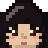
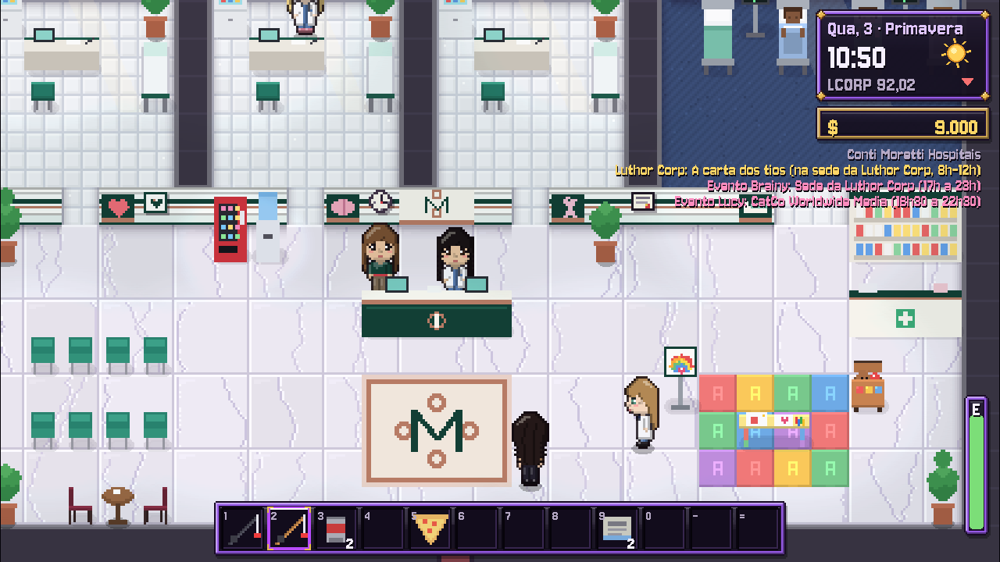

Conti Moretti Hospitais
O Conti Moretti Hospitais tem 12 especialidades. Uma consulta custa $90: enche a energia e dá um bônus que vale até a noite.
| Especialidade | Médica | Sobre | Bônus do dia |
|---|---|---|---|
| Cardiologia | Prevenção, diagnóstico e acompanhamento cardiovascular com cuidado integrado. | Coração em dia: você anda 10% mais rápido hoje. | |
| Neurologia | Avaliação especializada do sistema nervoso, memória, movimento e qualidade de vida. | Foco total: trabalhar no laboratório gasta metade da energia hoje. | |
| Ortopedia | Diagnóstico, tratamento e reabilitação para mobilidade, trauma e saúde musculoesquelética. | Coluna alinhada: pescar não gasta energia hoje. | |
| Pediatria | Cuidado integral e acolhedor para acompanhar cada fase do desenvolvimento infantil. | Coração de criança: carinho no seu bichinho vale o dobro hoje. | |
| Oncologia | Cuidado oncológico coordenado, com acompanhamento multidisciplinar em toda a jornada. | Prevenção em dia: +20 de energia extra agora. | |
| Ginecologia & Obstetrícia | Saúde da mulher, prevenção, acompanhamento ginecológico e cuidado durante a gestação. | Autocuidado: presentes rendem 25% mais amizade hoje. | |
| Gastroenterologia | Avaliação e acompanhamento do sistema digestivo com apoio diagnóstico integrado. | Digestão leve: comidas dão 30% mais energia hoje. | |
| Endocrinologia |  Cristina | Acompanhamento metabólico e hormonal com foco em prevenção e equilíbrio clínico. | Equilíbrio: pratos cozinhados vendem 20% mais caro hoje. |
| Dermatologia | Saúde da pele, cabelos e unhas com avaliação clínica e acompanhamento individualizado. | Brilho próprio: gorjetas do karaokê 50% maiores hoje. | |
| Urologia | Cristina | Cuidado do trato urinário e saúde masculina com abordagem preventiva e especializada. | Hidratada: se desmaiar hoje, o hospital não cobra nada. |
| Oftalmologia | Cristina | Avaliação da saúde ocular, prevenção e acompanhamento de alterações da visão. | Olhar atento: você nota mais coletáveis na praia e no parque hoje. |
| Psiquiatria | Cuidado em saúde mental com escuta qualificada, acompanhamento e integração assistencial. | Mente leve: conversas rendem 50% mais amizade hoje. |
Outras coisas
- Farmácia: remédios e vitaminas (veja as lojas).
- Doação: $1.000 por estação; a Ala Luthor ganha uma placa.
- Desmaio: às 2h a Letícia desmaia e acorda num leito, com conta para pagar (de graça com a Meredith a 3 corações).
- Brinquedoteca: das 9h às 19h, uma vez por dia, contar história ou levar doce para as crianças. Ver Atividades.
Benefícios das médicas (3 corações)
- Milany: consulta pela metade do preço.
- Meredith: hospital grátis se desmaiar.
- Cristina: contrato de $200 toda segunda.
- Izzie e Addison: presentes.
